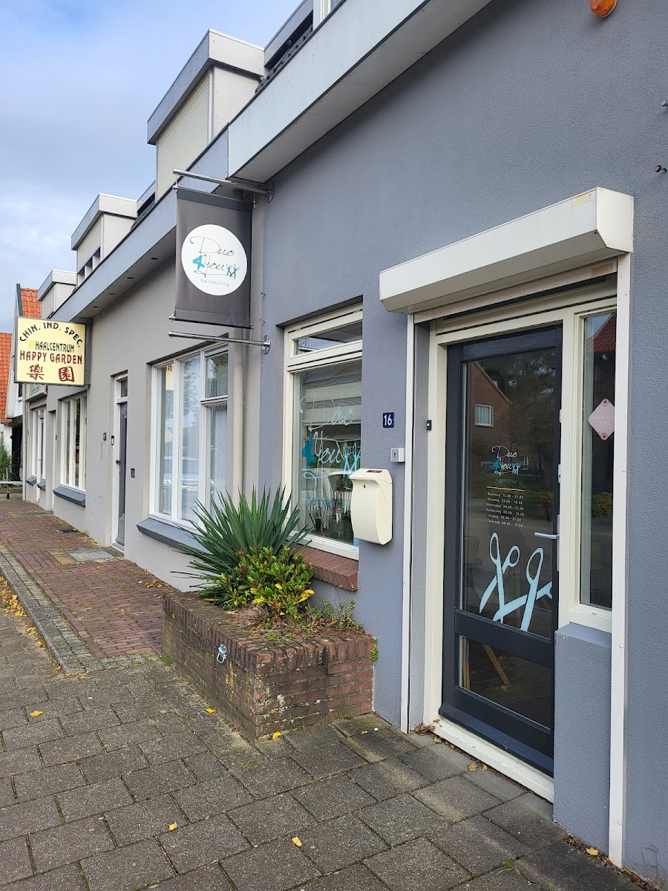
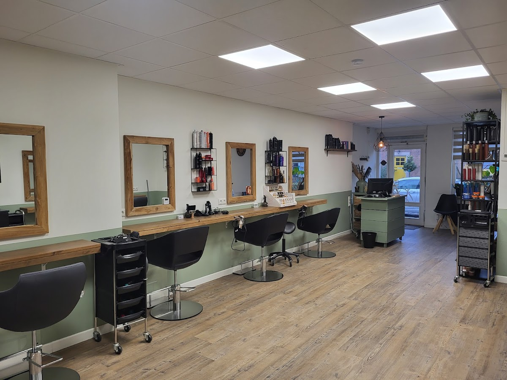
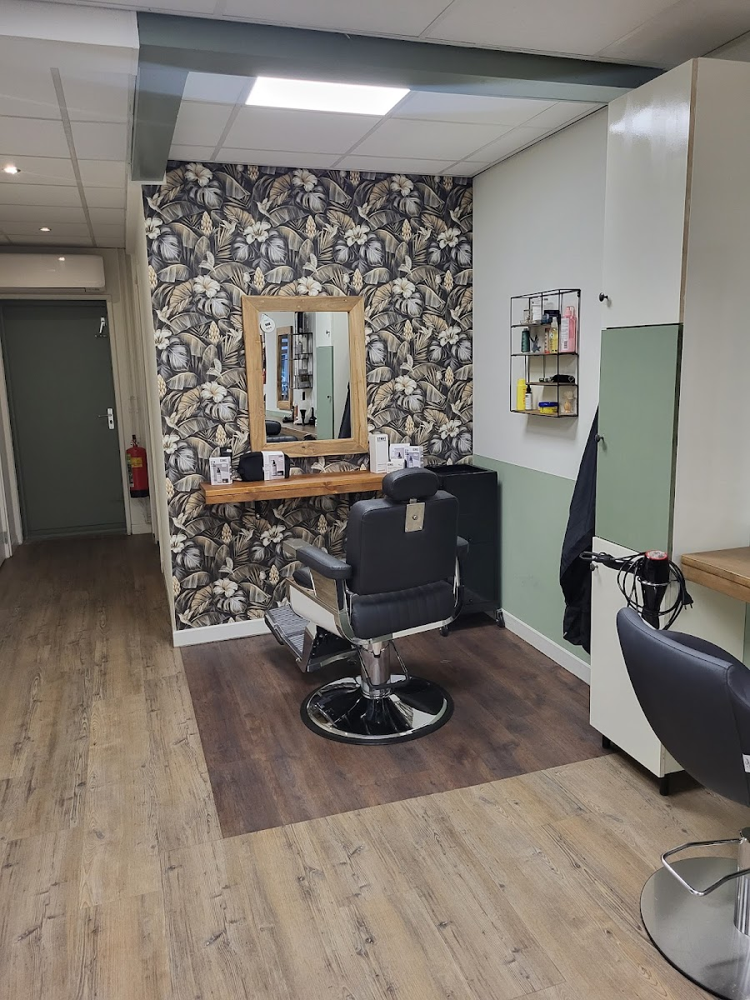
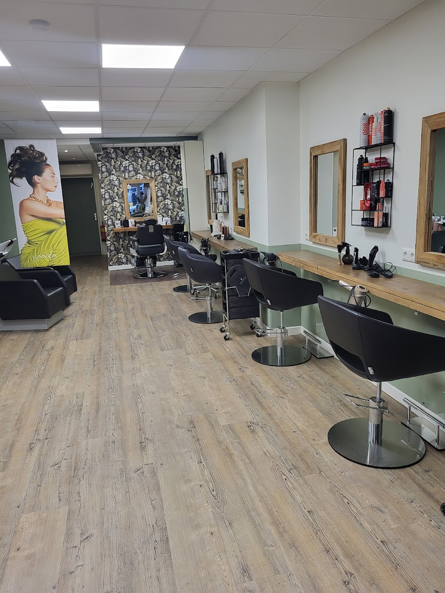

01 · Kapsalon in Wijchen
hairstyling
Voor jou.

02 · De salon
Even zitten, op adem komen en de deur uit met haar dat klopt. Geen lopende band — gewoon aandacht en vakwerk.

03 · Wat klanten zeggen
★4,9 Google-reviews
Bron: Google-reviews, juli 2026

04 · De afspraak
Holenbergseweg 16 · Wijchen